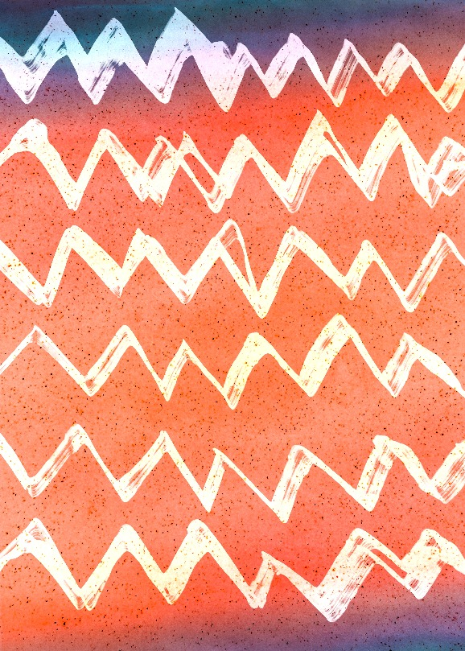
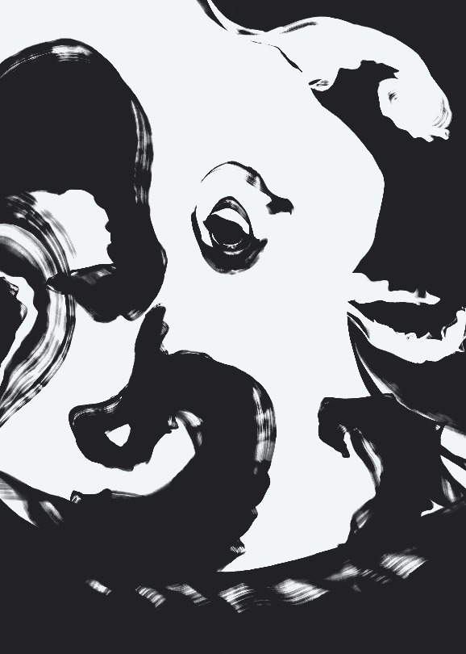
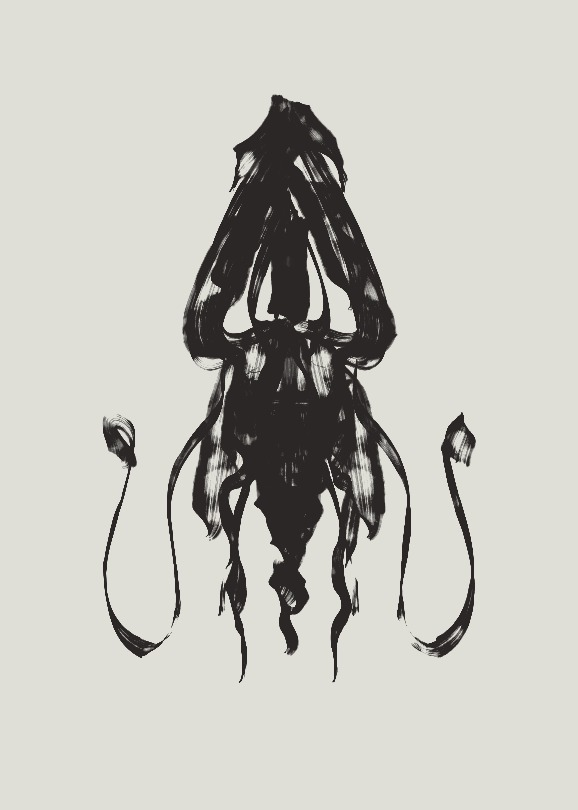
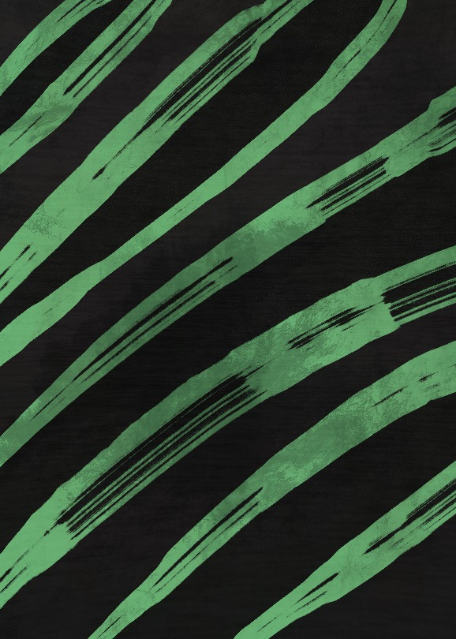
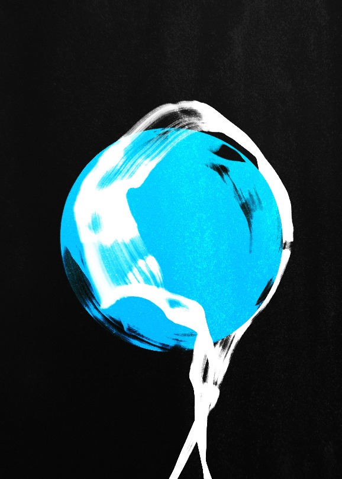
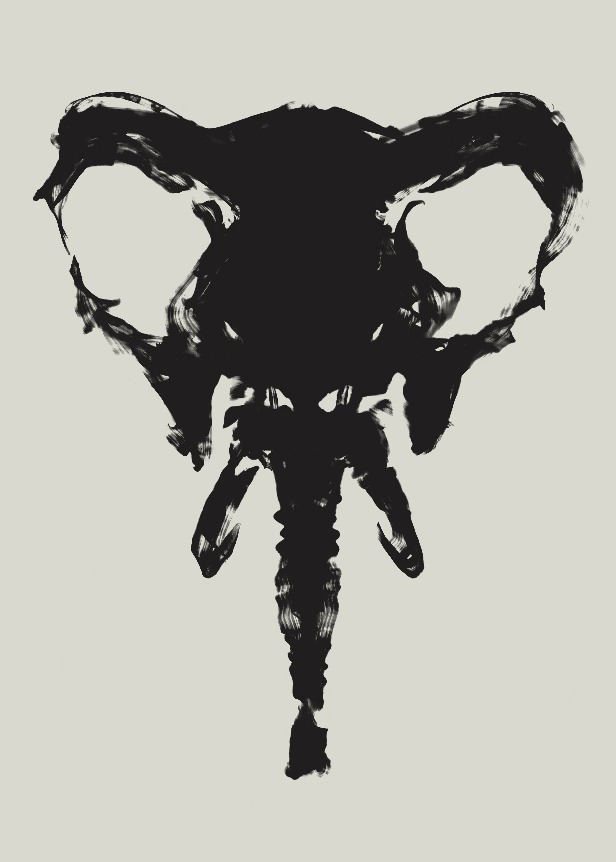
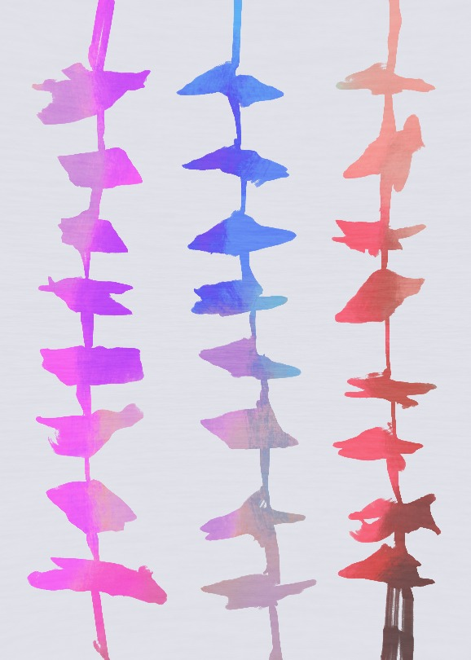

insitu.js
Turn your art into “art” in a single click with some JS generated, randomized CSS. Extra support for galleries.
Those are my personal illustrations. It’s easier to understand what’s happening by clicking the same thumbnail multiple times.







For a complete how-to and description, visit the insitu.js GitHub repository.